Foundry Toolkit for Visual Studio Code
Foundry Toolkit for Visual Studio Code 帮助开发者和 AI 工程师使用生成式 AI 模型构建、测试和部署 AI 应用程序。你可以在本地或云端使用它，在一个地方管理完整的 AI 应用程序工作流。
Foundry Toolkit 提供与 OpenAI、Anthropic、Google 和 GitHub 等提供商的热门 AI 模型的无缝集成，同时还通过 ONNX 和 Ollama 支持本地模型。从模型发现和实验到提示工程和部署，Foundry Toolkit 在 VS Code 中简化了你的 AI 开发工作流。
关键功能
| 功能 | 描述 | 截图 | ||
|---|---|---|---|---|
| --------- | ------------- | ------------ | ||
| 创建代理 | 使用不同技术创建利用工具和向量的提示代理，或使用自定义代码的托管代理。 | 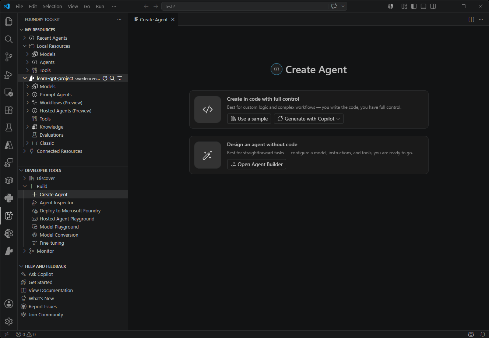 | ||
| 模型目录 | 从多个来源发现和访问 AI 模型，包括 Microsoft Foundry、Foundry Local、GitHub、ONNX、Ollama、OpenAI、Anthropic 和 Google。并行比较模型，为你的用例找到最佳匹配。 | 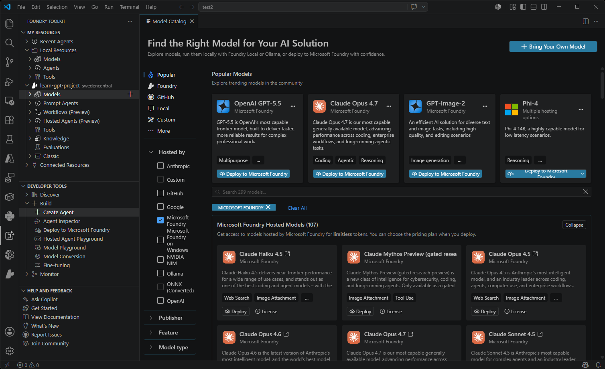 | ||
| 演练场 | 用于实时模型测试的交互式聊天环境。尝试不同的提示、参数以及包括图像和附件在内的多模态输入。 | 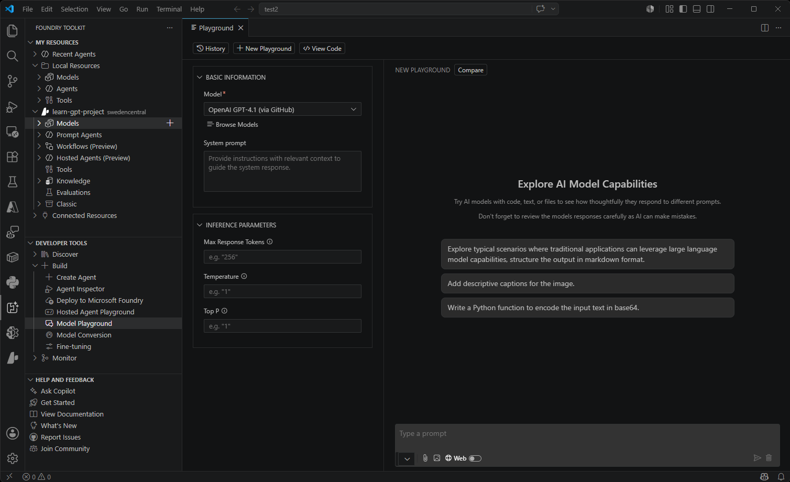 | ||
| 代理构建器 | 简化的提示工程和代理开发工作流。创建复杂的提示，集成 MCP 工具，并使用结构化输出生成生产就绪的代码。 | 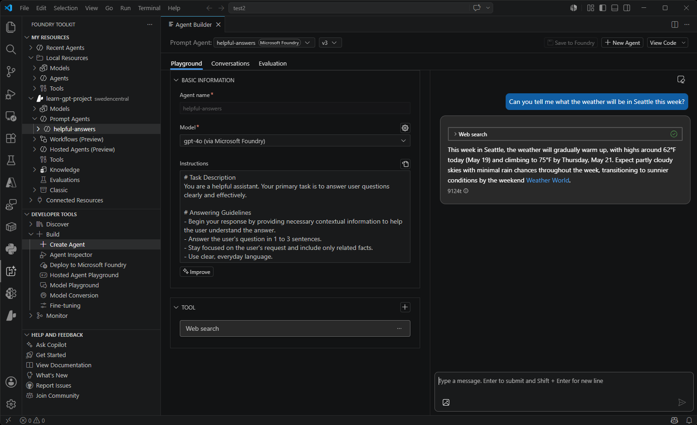 | ||
| 代理检查器 | 直接在 VS Code 中调试、可视化和迭代 AI 代理。 | 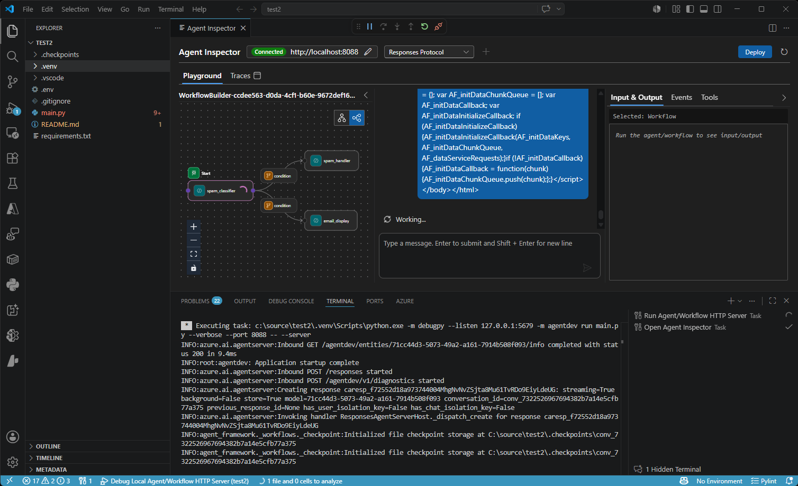 | ||
| 模型评估 | 使用数据集和标准指标进行全面的模型评估。使用内置评估器（F1 分数、相关性、相似度、连贯性）衡量性能，或创建自定义评估标准。 | 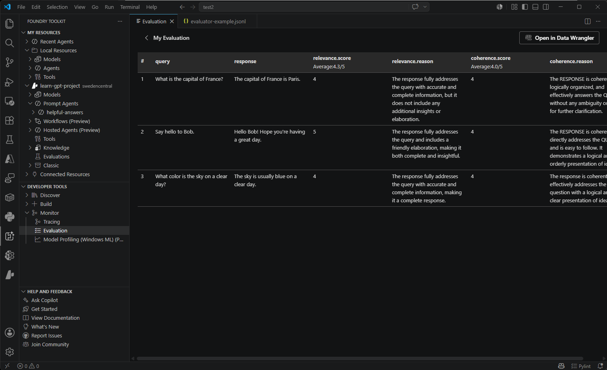 | ||
| 工具目录 | 使用 Visual Studio Code 中的工具目录连接 Foundry 工具和本地 MCP 服务器工具，并通过代理构建器将其添加到代理中。 | 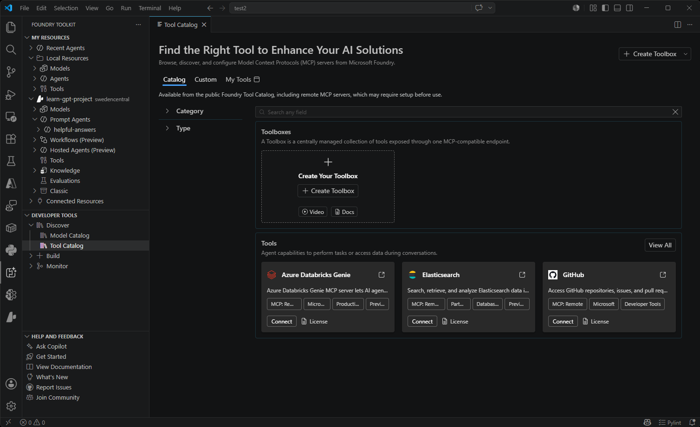 | ||
| 微调 | 针对特定领域和需求自定义和适配模型。在本地使用 GPU 支持训练模型，或使用 Azure Container Apps 进行云端微调。 | 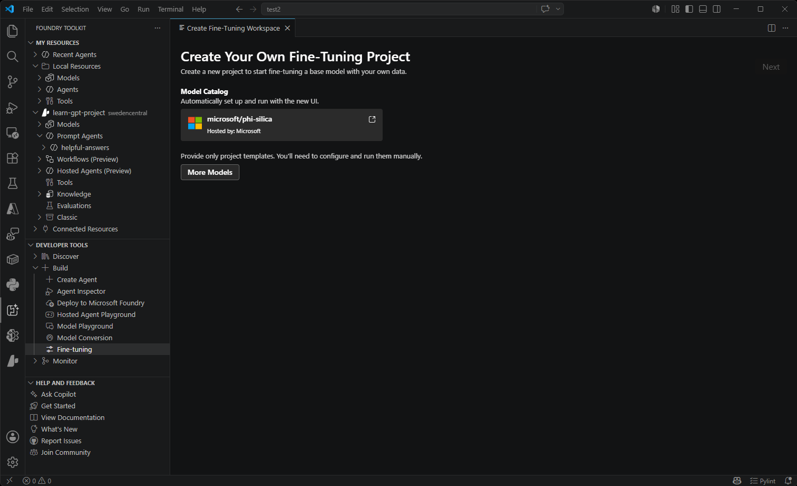 | ||
| 模型转换 | 转换、量化和优化机器学习模型以进行本地部署。将来自 Hugging Face 和其他来源的模型进行转换，以便在使用 CPU、GPU 或 NPU 加速的 Windows 上高效运行。 | 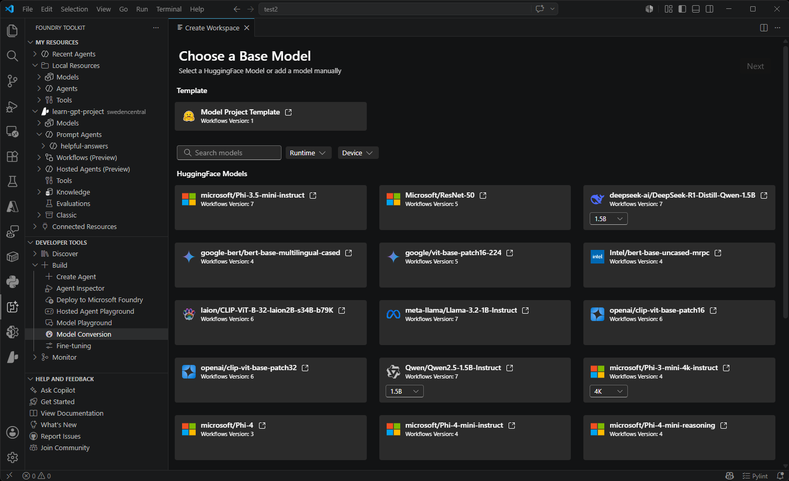 | ||
| 跟踪 | 监控和分析 AI 应用程序的性能。收集和可视化跟踪数据，以深入了解模型行为和性能。 | 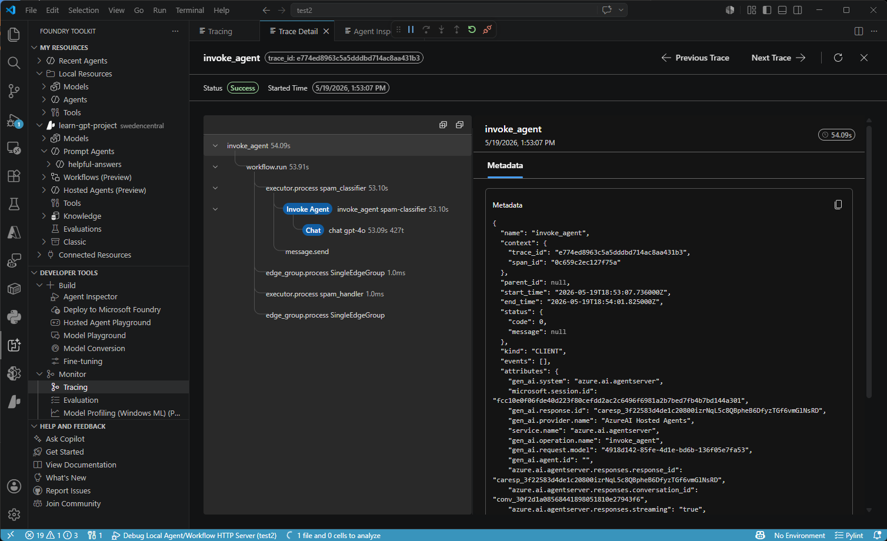 | ||
| 性能分析（Windows ML） | 诊断进程的 CPU、GPU、NPU 资源使用情况、不同执行提供程序上的 ONNX 模型以及 Windows 机器学习事件。 | 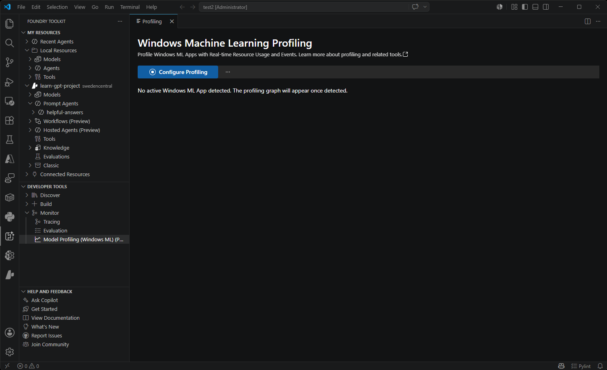 |
Foundry Toolkit 面向哪些用户？
Foundry Toolkit 专为从事生成式 AI 的人员设计，从初学者到专家均适用：
开发者
- 应用程序开发者：构建 AI 驱动的应用程序，需要集成语言模型
- 全栈开发者：希望为 Web 和桌面应用程序添加智能功能
- 移动开发者：在生产部署之前对 AI 功能进行原型设计
AI 工程师和数据科学家
- AI 工程师：针对特定领域微调模型并将其部署到生产环境
- 数据科学家：评估模型性能并比较不同方案
- ML 工程师：转换和优化模型以实现高效的本地部署
研究人员和教育工作者
- AI 研究人员：尝试不同的模型和提示工程技术
- 教育工作者：教授 AI 概念并演示模型能力
- 学生：学习生成式 AI 并进行实操模型交互
关键用例
- 探索和评估来自 Anthropic、OpenAI 和 GitHub 等提供商的模型
- 使用 ONNX 和 Ollama 在本地运行模型，以实现隐私保护和成本控制
- 构建和测试具有提示生成和 MCP 工具集成的代理
- 转换和优化模型以在不同硬件配置上部署
安装与设置
快速安装
由于 Foundry Toolkit 依赖 .NET 运行时，需要预先安装。
通过 Visual Studio Marketplace 安装扩展是最快捷的上手方式：
安装 Foundry Toolkit for VS Code
成功安装后，Foundry Toolkit 图标将出现在活动栏中。
手动安装
你也可以从 Visual Studio Code Marketplace 手动安装 Foundry Toolkit 扩展。按照安装扩展中详述的步骤操作。
[!TIP]
或者，选择活动栏中的扩展图标。
- 搜索 Foundry Toolkit for Visual Studio Code 并从搜索结果中选择安装。
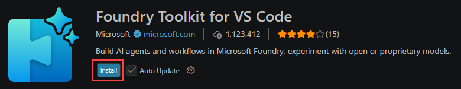
[!TIP]
安装后请查看新增功能页面，了解每个版本的详细功能。
- 成功安装后，Foundry Toolkit 图标将出现在活动栏中。
验证并安装 Foundry Toolkit 先决条件（本地模型）
Foundry Toolkit 通过 Foundry Local 提供本地 LLM 运行能力，运行 Foundry Toolkit: 安装环境先决条件 命令完成 Foundry 本地设置，以利用这些功能。
你可以使用 Foundry Toolkit: 验证环境先决条件 命令来验证先决条件的安装状态：
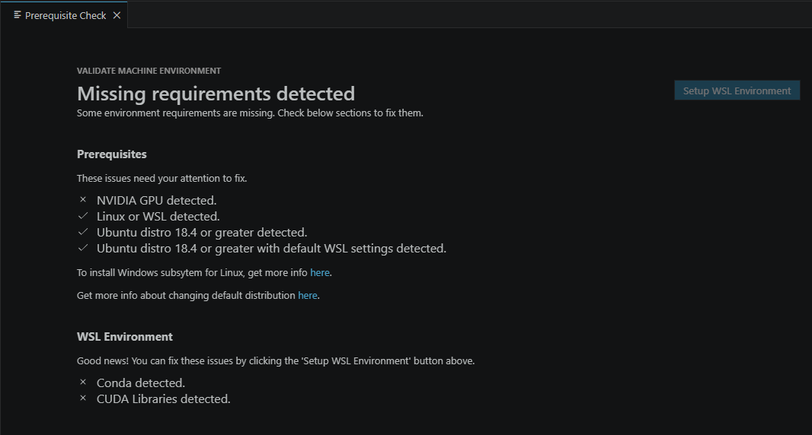
探索 Foundry Toolkit
Foundry Toolkit 直接包含 Foundry 侧边栏，因此你可以在一个地方管理 Microsoft Foundry 资源和 Foundry Toolkit 功能。
[!NOTE]
Foundry 侧边栏将于 2026 年 6 月 1 日停用。所有 Foundry 侧边栏功能现已在 Foundry Toolkit 侧边栏中可用。
Foundry Toolkit 在其自己的视图中打开，Foundry Toolkit 图标显示在 VS Code 活动栏上。该扩展有三个主要部分：我的资源、开发者工具以及帮助和反馈。
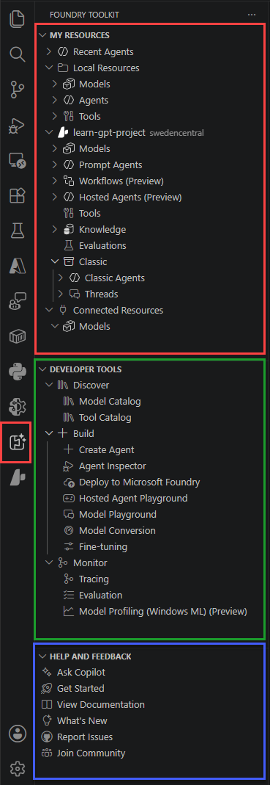
- 我的资源：此部分包含你在 Foundry Toolkit 中可访问的资源。我的资源部分是与你 Azure AI 资源交互的主要视图。它包含以下子部分：
- 本地资源：此部分包含你本地机器上的 AI 资源，例如本地模型、代理和工具。
- 你的 Foundry 项目：此部分显示连接到 Foundry Toolkit 的 Microsoft Foundry 项目。使用你的 Foundry 项目管理和部署 AI 资源，例如已部署的模型、提示代理、托管代理、连接、工具、向量存储和经典代理。
- 模型：查看项目中部署的模型，包括目标 URI 和身份验证密钥等终结点信息。
- 提示代理：查看项目中部署的提示代理（包括先前版本），通过演练场进行测试，查看对话并设置评估。
- 工作流：查看和创建新的声明式预定义操作序列，在可视化构建器中编排代理和业务逻辑。
- 托管代理（预览版）：查看项目中部署的托管代理。
- 工具：浏览、发现和配置来自 Microsoft Foundry 的模型上下文协议（MCP）服务器，或创建自定义 MCP 服务器。
- 知识库：查看和添加代理使用的新向量存储和其他数据源。
- 经典：查看在"经典"Foundry 中创建的代理和线程。
- 已连接的资源：此部分包含从 GitHub 模型等提供商连接到 Foundry Toolkit 的资源。
- 开发者工具：此部分包含可用于构建和部署 AI 应用程序的工具。开发者工具视图是你找到可用于部署以及后续使用已部署模型和代理的工具的地方。它包含以下子部分：
- 发现：此部分包含帮助你发现和管理 AI 模型和工具的工具。它包含以下子部分：
- 模型目录：模型目录让你从多个来源发现和访问 AI 模型，包括 GitHub、ONNX、Ollama、OpenAI、Anthropic 和 Google。并行比较模型，为你的用例找到合适的模型。
- 工具目录：浏览和管理 Foundry Toolkit 中可用的工具。
- 构建：此部分是你找到可用于部署以及后续使用 Foundry Toolkit 中已部署代理的工具的地方。它包含以下子部分：
- 创建代理：轻松创建和部署代理。
- 代理检查器：直接在 VS Code 中调试、可视化和迭代 AI 代理。
- 部署到 Microsoft Foundry：将本地代理作为托管代理部署到 Microsoft Foundry。
- 托管代理演练场：托管代理演练场提供一个交互式环境来试验你的托管代理。
- 模型演练场：模型演练场提供一个交互式环境来试验生成式 AI 模型。
- 模型转换：模型转换工具帮助你在本地 Windows 平台上转换、量化、优化和评估预构建的机器学习模型。
- 微调：此工具允许你使用自定义数据集在带有 GPU 的本地计算环境中或在云端（Azure Container Apps）带有 GPU 的环境中对预训练模型运行微调作业。
- 监控：此部分用于监控和分析 AI 应用程序的性能。它包含以下子部分：
- 跟踪：跟踪功能帮助你监控和分析 AI 应用程序的性能。
- 评估：通过将模型、提示和代理的输出与真实数据进行比较并计算评估指标来对它们进行评估。
- 模型性能分析（Windows ML）（预览版）：此工具允许你诊断进程的 CPU、GPU、NPU 资源使用情况、不同执行提供程序上的 ONNX 模型以及 Windows 机器学习事件。
- 发现：此部分包含帮助你发现和管理 AI 模型和工具的工具。它包含以下子部分：
- 帮助和反馈：此部分包含 Foundry Toolkit 文档、反馈、支持和 Microsoft 隐私声明的链接。它包含以下子部分：
- 查看文档：Foundry Toolkit 文档的链接。
- 新增功能：Foundry Toolkit 发行说明的链接。
- 报告问题：Foundry Toolkit GitHub 仓库问题页面的链接。
- 加入社区：加入 Foundry Toolkit 社区，分享反馈并与其他用户和 Foundry Toolkit 团队建立联系。
后续步骤
- 获取有关在 Foundry Toolkit 中添加生成式 AI 模型的更多信息
- 使用模型演练场与模型交互
- 使用代理构建器开发代理，并使用代理检查器进行调试